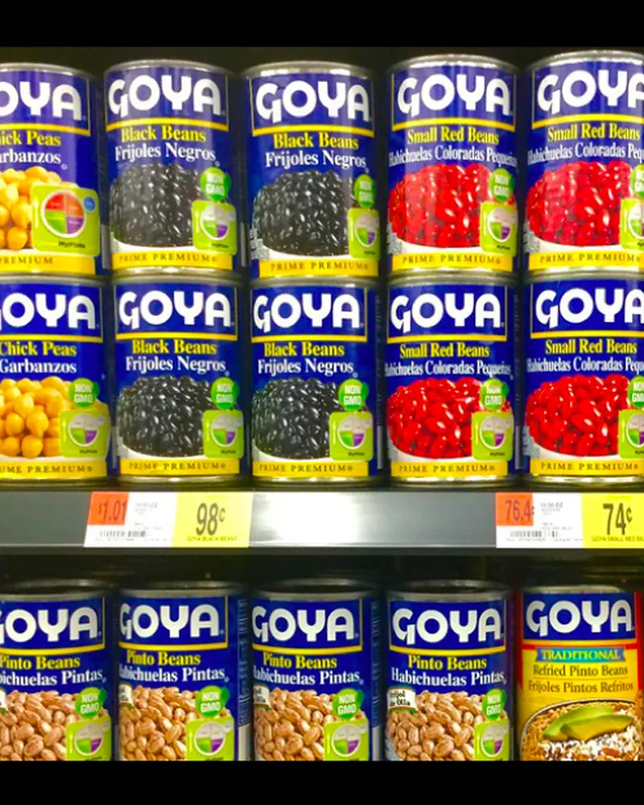

Integrated performance data
Fieldline connects, cleans and transforms data from across your organization into a governed foundation designed to measure performance consistently and in detail.
Your business is complex. Getting to the root of performance shouldn’t be. Fieldline helps complex organizations define what drives performance, put ownership closer to where outcomes can be influenced and create the visibility and feedback people need to improve.
Purpose-built starts with people
The people closest to the work often understand the context behind performance in a way no centralized report ever could. But experience alone isn’t enough. To improve outcomes, they need clear measures, access to the detail behind the result and feedback that shows whether their decisions are moving performance in the right direction.
Leadership gains transparency. Your people gain the context to investigate, act and understand the impact of what happens next.
Our partners
Experience where it matters
Fieldline brings decades of industry experience together with proprietary technology and performance expertise. We start with the realities of your operating environment, not ask you to translate them into a generic application or predetermined model.

Connect pricing, promotion, category, inventory, supplier and financial performance around the way your organization manages the business.
Explore retail performanceUnderstand performance customer by customer, product by product, route by route and delivery by delivery. Connect sales, inventory, service, cost-to-serve and profitability so the people closest to the business can see what’s driving results.
Explore wholesale and distribution performanceUnderstand those differences without losing sight of the larger business, from pricing and product mix to route efficiency and profitability.
Explore non-alcoholic performancePricing, portfolio mix, promotions, inventory, route execution and cost-to-serve influence whether growth creates value or diminishes it.
Explore alcoholic performance
Connect internal, distributor, retailer and market information to understand how pricing, promotion, execution and product mix shape growth and margin.
Explore consumer goods performanceBring clinical, operating and financial information together around the measures, responsibilities and priorities that matter to your organization.
Explore Fieldline HealthDesigned to go further
Traditional analytics and BI environments limit business users to the measures, views and interactions someone anticipated in advance. Fieldline’s proprietary technology is designed for what happens after the first answer. Try it with illustrative numbers from a beverage distributor.
Built differently for a reason
Fieldline’s proprietary performance technology grew from decades of work helping complex organizations define value, distribute responsibility and give people the visibility and feedback they need to improve outcomes. That experience shaped the technology itself.
Fieldline connects, cleans and transforms data from across your organization into a governed foundation designed to measure performance consistently and in detail.

Measures, definitions, hierarchies, relationships and business rules give the data meaning beyond the systems where it originated, including advanced allocations so measures such as margin reflect how value is actually created.

Business users can move from summarized performance into detailed activity, change perspectives and follow questions without requiring every path to be predefined.

Integrated AI helps users navigate, analyze, interpret change and identify where to investigate next. It works within your measures, relationships and business rules, so it has the context to support more relevant analysis.

Fieldline works with your organization to define measures, structure business logic, build allocation rules and shape the performance environment around the outcomes you’re aiming to improve.
Technology built for performance. Expertise that makes it yours.
Built into the way you work
We don’t layer another performance process on top of your organization. We start with the improvements you’re looking to make, the way your business operates and what your people need to understand.
We begin with your priorities, your operating environment and the decisions your people need to make, not a predetermined model.
Data, business rules, technology and expertise come together around your measures. Built to adapt. Designed to deliver.
New priorities emerge, markets change and data sources expand. We keep incorporating new data, refining measures and extending visibility, so the environment never has to be rebuilt.
It’s a performance environment that continues to earn its place in your business.

Real organizations. Their way of thinking.
Not only does the solution provide information to make better decisions, the Fieldline team understand the questions we are asking and why answers to those questions matter to our business.

A regional retailer with more than 75 stores moved from waiting days on IT reports to answering store questions quickly.
Nine stores went from week-long manual analysis to pulling sales information in minutes.
A practical, flexible view of store-level performance that separates true demand issues from execution gaps.

Why Commercial Performance Breaks Down covers the six-step rapid performance feedback cycle, where decision friction appears and a practical self-assessment.
Get the guide
Most retail, wholesale, distribution and CPG organizations have tried to solve performance with integration alone.
Read the articleMost organizations have no shortage of key performance indicators. Fewer have KPIs that pull in the same direction.
Read the articleDecision friction accumulates at different points in the performance feedback cycle.
Read the articleLet’s move performance forward, together
Bring your people, performance priorities and data together with Fieldline’s expertise, proven methodology and proprietary technology to create a performance solution built around the way value is created across your business.